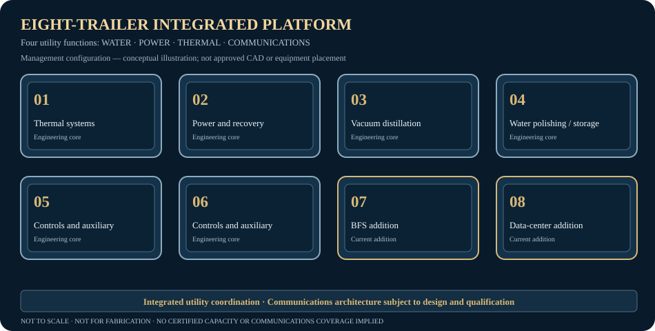

Texas investment pathway
The current U.S. eight-trailer integrated platform combines six historical engineering-core trailers with BFS and data-center additions. Four utility functions—water, power, thermal and proposed communications—are presented for controlled professional review.
Texas Gold IPO Investment Package
Updated 1 November 2026: the 500-page American review package retains its original source documentation and adds current Mumbai CAD handoff navigation. The November 1 source package predates the current eight-trailer management configuration. Its six-trailer contents remain historical engineering references until formally reconciled.
Access: Google Drive retains existing document permissions. Request approval from Trinity management if needed. No investment subscription or transaction execution is provided here.
Blue OPEN · Current American IPO package Request access / meeting